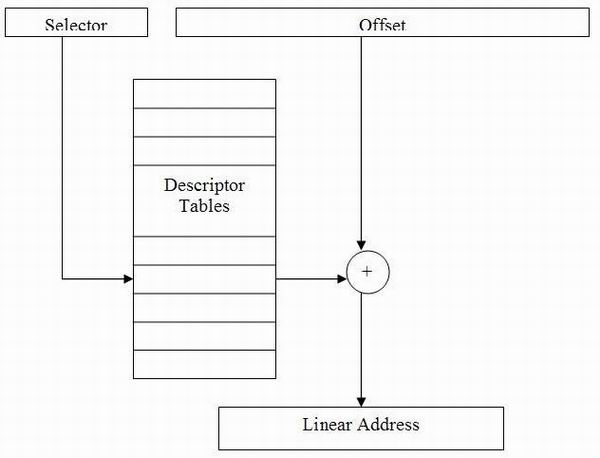
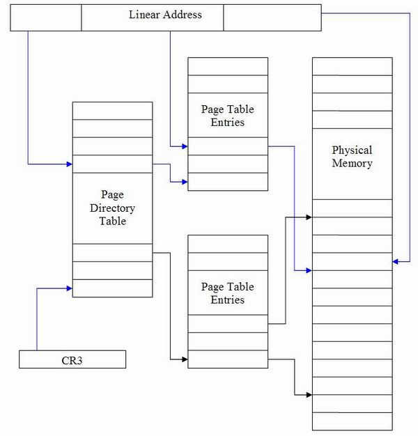
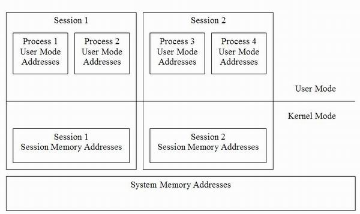

WDM实现IOCTLs
简介
这是关于编写设备驱动程序系列教程的第二篇。我们会从上一篇谈到的东西继续下去。这一系列文章的主旨一点点打造编写设备驱动程序所需的知识。我们会利用上一篇文章的代码进行修改构建。在本文中，我们扩展这些代码以提供包括读取功能，处理输入/输出控制（也称为 IOCTL）并且更多地了解 IRP。
在开始之前，我先澄清一些常见问题。
哪里可以下载 DDK 或 WDK? 每一版 Windows 的发布，微软会同步推出驱动程序工具包，目前最新的是 WDK8，可以用来为 Vista, Windows 7 和 Windows 8 开发驱动。你可以在微软站点上下载该工具包。
我可以在驱动中使用 windows.h 头文件吗? 不能混用windows SDK头文件和windows DDK头文件，二者的定义冲突会造成在编译报错。如果用户模式程序用到部分 DDK 的内容，通常我们会将需要的 DDK 或 SDK 的定义抽取出来放到源代码中。你还可以将 DDK 和 SDK 相关的文件隔离开来，每一个 .C 文件都可以包含正确的头文件而不会冲突。在其它正常使用中，是将他们分开的。
可以用同样的方式实现某种特定类型的驱动吗？ 这里谈的是适用大多数 Windows 驱动程序开发的通用框架。驱动程序不是非得访问硬件，而是通常组成个驱动程序栈。如果想实现某种特定类型的驱动程序，本文是了解驱动程序通常是如何工作的起点。后续的不同之处在于如何向系统宣告设备类别、 要实现哪些 IOCTL、 需要和哪些下层驱动进行通讯、以及其他一些要求实现的部分如配套驱动或用户模式组件。具体实现某种特定类型的驱动时，你应该在 MSDN 、DDK 多阅读一些与该类型驱动相关的内容。有些框架封装了我们在这里谈到的大部分内容，利用这些框架写起例子来会更简单。
可以在驱动中使用c/c++运行时库吗？
你应该避免在驱动中使用这些，取而代之的时等价的内核模式的API，Kernel Run Time Library（内核运行时库）也包含了字符串功 能。在内核模式中编程，有一些需要注意的问题，在内核API中，每个API都会告诉你它可以运行在那个IRQL级别，避免使用标准的运行库会节省你的调试 和发现问题的时间。
完成功能ReadFile
在前面提过的，有三种IO类型，Direct, Buffered 和 Neither。下面将会解释新的功能，return values（返回值）。在WriteFile 的实现中，我们不需要担心返回值。正确的实现是告诉用户模式的应用程序，写了多少数据。在下面ReadFile的实现中，需要返回值，这不但是为了告诉用户模式的应用程序，而且还要通知IO管理器。
如果你回忆buffered IO是如何工作的，用户模式的内存被copy到另外的内存缓冲中。如果我们想从驱动中读数据，IO管理器需要知道从用户模式的临时缓冲中copy多少数据。如果我们不这么做，用户模式的应用程序将不会获得任何数据。
NTSTATUS Example_ReadDirectIO(PDEVICE_OBJECT DeviceObject, PIRP Irp)
{
NTSTATUS NtStatus = STATUS_BUFFER_TOO_SMALL;
PIO_STACK_LOCATION pIoStackIrp = NULL;
PCHAR pReturnData = "Example_ReadDirectIO - Hello from the Kernel!";
UINT dwDataSize = sizeof("Example_ReadDirectIO - Hello from the Kernel!");
UINT dwDataRead = 0;
PCHAR pReadDataBuffer;
DbgPrint("Example_ReadDirectIO Called \r\n");
/*
* Each time the IRP is passed down the driver stack a
* new stack location is added
* specifying certain parameters for the IRP to the
* driver.
*/
pIoStackIrp = IoGetCurrentIrpStackLocation(Irp);
if(pIoStackIrp && Irp->MdlAddress)
{
pReadDataBuffer = MmGetSystemAddressForMdlSafe(Irp->MdlAddress,
NormalPagePriority);
if(pReadDataBuffer &&
pIoStackIrp->Parameters.Read.Length >= dwDataSize)
{
/*
* We use "RtlCopyMemory" in the kernel instead
* of memcpy.
* RtlCopyMemory *IS* memcpy, however it's best
* to use the
* wrapper in case this changes in the future.
*/
RtlCopyMemory(pReadDataBuffer, pReturnData,
dwDataSize);
dwDataRead = dwDataSize;
NtStatus = STATUS_SUCCESS;
}
}
实现返回值
使用IRP中的IO_STATUS_BLOCK 实现返回值。依赖与实现的主要功能，可以改变IRP中成员变量。在我们实现的主要功能中，Status等价于返回值，information包含了读写的数量。看下面的代码，注意IoCompleteRequest。
当驱动完成IRP调用后，IoCompleteRequest被调用。在上一篇文章的例子中，我们没有调用IoCompleteRequest,因为IO管理器已经做了这个工作，但是驱动最好在完成IRP后调用这个函数。
Irp->IoStatus.Status = NtStatus;
Irp->IoStatus.Information = dwDataRead;
IoCompleteRequest(Irp, IO_NO_INCREMENT);
return NtStatus;
}IoCompleteRequest 的第二个参数指定了等待这个IRP完成的线程的推进的优先级。例如，一个线程等待网络操作很长时间，这个就有助于调度程序重新运行这个线程。
ntdll!_IO_STATUS_BLOCK
+0x000 Status : Int4B
+0x000 Pointer : Ptr32 Void
+0x004 Information : Uint4B
严格的参数验证和错误校验
现在的代码完成更为严格的参数和错误校验。在你的驱动中，你要确认用户模式不应该传递无效的内存地址给驱动。同时在返回值上，也要做得更好，而不是简单的 返回正确或者错误。需要告诉用户模式的程序错误的具体原因。你可能比较喜欢能够通过GetLastError 获得具体错误原因的API，这样就可以改正 上层代码。如果只是简单的返回true或者false，那用户模式的应用程序就很难使用你的驱动。
输入输出控制(IOCTL)
IOCTL更多的用来应用程序和驱动的通信，而不是简单的读写数据。一般情况，驱动导出一些IOCTL并定义一些在通信中使用的数据结构。一般情况，这些 数据结构不能包含指针，因为IO管理器不能解释这些结构。所有的数据应该被包含在一个块中。如果你想创建指针，你可以创建块内的偏移。如果你还记得，即使 在一个进程中，驱动也不能访问用户模式的数据。所以，如果要实现内存指针，驱动要copy页内存或者锁定页内存。用户模式的程序使用 DeviceIoControl完成通信。
定义IOCTL
我们要做的第一件事情是定义在应用程序和驱动间通信的IOCTL代码。首先，跟用户模式的某些东西关联IOCTL，你可能想到windows 消息。 IOCTL 是一个32位的数字。最低两位定义为传送类型： METHOD_OUT_DIRECT， METHOD_IN_DIRECT, METHOD_BUFFERED or METHOD_NEITHER.
从2－13位定义为功能码，最高位定义为定制位，这个位决定了是用户定义还是系统定义。
接下两位的定义：决定了 如果IO管理器打开设备失败，该如何处理。例如FILE_READ_DATA 或者FILE_WRITE_DATA。剩余的位代表了设备类型。最高位仍是定制位。
下面是快速定义IOCTL的宏。
/*
* IOCTL's are defined by the following bit layout.
* [Common |Device Type|Required Access|Custom|Function Code|Transfer Type]
* 31 30 16 15 14 13 12 2 1 0
*
* Common - 1 bit. This is set for user-defined
* device types.
* Device Type - This is the type of device the IOCTL
* belongs to. This can be user defined
* (Common bit set). This must match the
* device type of the device object.
* Required Access - FILE_READ_DATA, FILE_WRITE_DATA, etc.
* This is the required access for the
* device.
* Custom - 1 bit. This is set for user-defined
* IOCTL's. This is used in the same
* manner as "WM_USER".
* Function Code - This is the function code that the
* system or the user defined (custom
* bit set)
* Transfer Type - METHOD_IN_DIRECT, METHOD_OUT_DIRECT,
* METHOD_NEITHER, METHOD_BUFFERED, This
* the data transfer method to be used.
*
*/
#define IOCTL_EXAMPLE_SAMPLE_DIRECT_IN_IO \
CTL_CODE(FILE_DEVICE_UNKNOWN, \
0x800, \
METHOD_IN_DIRECT, \
FILE_READ_DATA | FILE_WRITE_DATA)
#define IOCTL_EXAMPLE_SAMPLE_DIRECT_OUT_IO \
CTL_CODE(FILE_DEVICE_UNKNOWN, \
0x801, \
METHOD_OUT_DIRECT, \
FILE_READ_DATA | FILE_WRITE_DATA)
#define IOCTL_EXAMPLE_SAMPLE_BUFFERED_IO \
CTL_CODE(FILE_DEVICE_UNKNOWN, \
0x802, \
METHOD_BUFFERED, \
FILE_READ_DATA | FILE_WRITE_DATA)
#define IOCTL_EXAMPLE_SAMPLE_NEITHER_IO \
CTL_CODE(FILE_DEVICE_UNKNOWN, \
0x803, \
METHOD_NEITHER, \
FILE_READ_DATA | FILE_WRITE_DATA)上边的代码显示了我们如何定义IOCTL。
实现IOCTL
第一件事是如何分发IOCTL 到它各自的实现代码中。IO_STACK_LOCATION中的Parameters.DeviceIoControl.IoControlCode包含了被调用的IOCTL的代码。下面就是分发每个IOCTL到它实现函数中的代码。
NTSTATUS Example_IoControl(PDEVICE_OBJECT DeviceObject, PIRP Irp)
{
NTSTATUS NtStatus = STATUS_NOT_SUPPORTED;
PIO_STACK_LOCATION pIoStackIrp = NULL;
UINT dwDataWritten = 0;
DbgPrint("Example_IoControl Called \r\n");
pIoStackIrp = IoGetCurrentIrpStackLocation(Irp);
if(pIoStackIrp) /* Should Never Be NULL! */
{
switch(pIoStackIrp->Parameters.DeviceIoControl.IoControlCode)
{
case IOCTL_EXAMPLE_SAMPLE_DIRECT_IN_IO:
NtStatus = Example_HandleSampleIoctl_DirectInIo(Irp,
pIoStackIrp, &dwDataWritten);
break;
case IOCTL_EXAMPLE_SAMPLE_DIRECT_OUT_IO:
NtStatus = Example_HandleSampleIoctl_DirectOutIo(Irp,
pIoStackIrp, &dwDataWritten);
break;
case IOCTL_EXAMPLE_SAMPLE_BUFFERED_IO:
NtStatus = Example_HandleSampleIoctl_BufferedIo(Irp,
pIoStackIrp, &dwDataWritten);
break;
case IOCTL_EXAMPLE_SAMPLE_NEITHER_IO:
NtStatus = Example_HandleSampleIoctl_NeitherIo(Irp,
pIoStackIrp, &dwDataWritten);
break;
}
}
Irp->IoStatus.Status = NtStatus;
Irp->IoStatus.Information = dwDataWritten;
IoCompleteRequest(Irp, IO_NO_INCREMENT);
return NtStatus;
}如果你理解了ReadFile and WriteFile的实现，以上代码就容易理解，只是简单的将实现集成到一个调用中。
METHOD_x_DIRECT
我们将同时解释METHOD_IN_DIRECT 和METHOD_OUT_DIRECT。两个基本上是相同的，INPUT缓冲使用BUFFERED的 实现，当我们解释Raad/Write我们使用MdlAddress 作为输出缓冲。IN和OUT的区别在于：如果你使用IN，你可以使用输出缓冲传递数 据，如果你使用OUT，只能用作返回数据。在这个例子中，我们在传递数据时，不使用IN实现。本质上，IN和OUT的实现是相同的。基于这个原因，我只讲 OUT的实现。
NTSTATUS Example_HandleSampleIoctl_DirectOutIo(PIRP Irp,
PIO_STACK_LOCATION pIoStackIrp, UINT *pdwDataWritten)
{
NTSTATUS NtStatus = STATUS_UNSUCCESSFUL;
PCHAR pInputBuffer;
PCHAR pOutputBuffer;
UINT dwDataRead = 0, dwDataWritten = 0;
PCHAR pReturnData = "IOCTL - Direct Out I/O From Kernel!";
UINT dwDataSize = sizeof("IOCTL - Direct Out I/O From Kernel!");
DbgPrint("Example_HandleSampleIoctl_DirectOutIo Called \r\n");
/*
* METHOD_OUT_DIRECT
*
* Input Buffer = Irp->AssociatedIrp.SystemBuffer
* Ouput Buffer = Irp->MdlAddress
*
* Input Size = Parameters.DeviceIoControl.InputBufferLength
* Output Size = Parameters.DeviceIoControl.OutputBufferLength
*
* What's the difference between METHOD_IN_DIRECT && METHOD_OUT_DIRECT?
*
* The function which we implemented METHOD_IN_DIRECT
* is actually *WRONG*!!!! We are using the output buffer
* as an output buffer! The difference is that METHOD_IN_DIRECT creates
* an MDL for the outputbuffer with
* *READ* access so the user mode application
* can send large amounts of data to the driver for reading.
*
* METHOD_OUT_DIRECT creates an MDL
* for the outputbuffer with *WRITE* access so the user mode
* application can recieve large amounts of data from the driver!
*
* In both cases, the Input buffer is in the same place,
* the SystemBuffer. There is a lot
* of consfusion as people do think that
* the MdlAddress contains the input buffer and this
* is not true in either case.
*/
pInputBuffer = Irp->AssociatedIrp.SystemBuffer;
pOutputBuffer = NULL;
if(Irp->MdlAddress)
{
pOutputBuffer =
MmGetSystemAddressForMdlSafe(Irp->MdlAddress,
NormalPagePriority);
}
if(pInputBuffer && pOutputBuffer)
{
/*
* We need to verify that the string
* is NULL terminated. Bad things can happen
* if we access memory not valid while in the Kernel.
*/
if(Example_IsStringTerminated(pInputBuffer,
pIoStackIrp->Parameters.DeviceIoControl.InputBufferLength,
&dwDataRead)) {
DbgPrint("UserModeMessage = '%s'", pInputBuffer);
DbgPrint("%i >= %i",
pIoStackIrp->Parameters.DeviceIoControl.OutputBufferLength,
dwDataSize);
if(pIoStackIrp->
Parameters.DeviceIoControl.OutputBufferLength >= dwDataSize)
{
/*
* We use "RtlCopyMemory" in the kernel instead of memcpy.
* RtlCopyMemory *IS* memcpy, however it's best to use the
* wrapper in case this changes in the future.
*/
RtlCopyMemory(pOutputBuffer, pReturnData, dwDataSize);
*pdwDataWritten = dwDataSize;
NtStatus = STATUS_SUCCESS;
}
else
{
*pdwDataWritten = dwDataSize;
NtStatus = STATUS_BUFFER_TOO_SMALL;
}
}
}
return NtStatus;
}METHOD_BUFFERED
METHOD_BUFFERED的实现本质上和Read，Write的实现相同。先分配缓冲，再从这个缓冲copy数据，缓冲是两倍大小，输入和输出缓 冲。读缓冲被copy到新的缓冲。在你返回前，你只是copy返回值到相同的缓冲。返回值被放到IO_STATUS_BLOCK ，IO管理器copy数 据到输出缓冲。
NTSTATUS Example_HandleSampleIoctl_BufferedIo(PIRP Irp,
PIO_STACK_LOCATION pIoStackIrp, UINT *pdwDataWritten)
{
NTSTATUS NtStatus = STATUS_UNSUCCESSFUL;
PCHAR pInputBuffer;
PCHAR pOutputBuffer;
UINT dwDataRead = 0, dwDataWritten = 0;
PCHAR pReturnData = "IOCTL - Buffered I/O From Kernel!";
UINT dwDataSize = sizeof("IOCTL - Buffered I/O From Kernel!");
DbgPrint("Example_HandleSampleIoctl_BufferedIo Called \r\n");
/*
* METHOD_BUFFERED
*
* Input Buffer = Irp->AssociatedIrp.SystemBuffer
* Ouput Buffer = Irp->AssociatedIrp.SystemBuffer
*
* Input Size = Parameters.DeviceIoControl.InputBufferLength
* Output Size = Parameters.DeviceIoControl.OutputBufferLength
*
* Since they both use the same location
* so the "buffer" allocated by the I/O
* manager is the size of the larger value (Output vs. Input)
*/
pInputBuffer = Irp->AssociatedIrp.SystemBuffer;
pOutputBuffer = Irp->AssociatedIrp.SystemBuffer;
if(pInputBuffer && pOutputBuffer)
{
/*
* We need to verify that the string
* is NULL terminated. Bad things can happen
* if we access memory not valid while in the Kernel.
*/
if(Example_IsStringTerminated(pInputBuffer,
pIoStackIrp->Parameters.DeviceIoControl.InputBufferLength,
&dwDataRead)) {
DbgPrint("UserModeMessage = '%s'", pInputBuffer);
DbgPrint("%i >= %i",
pIoStackIrp->Parameters.DeviceIoControl.OutputBufferLength,
dwDataSize);
if(pIoStackIrp->Parameters.DeviceIoControl.OutputBufferLength
>= dwDataSize)
{
/*
* We use "RtlCopyMemory" in the kernel instead of memcpy.
* RtlCopyMemory *IS* memcpy, however it's best to use the
* wrapper in case this changes in the future.
*/
RtlCopyMemory(pOutputBuffer, pReturnData, dwDataSize);
*pdwDataWritten = dwDataSize;
NtStatus = STATUS_SUCCESS;
}
else
{
*pdwDataWritten = dwDataSize;
NtStatus = STATUS_BUFFER_TOO_SMALL;
}
}
}
return NtStatus;
}METHOD_NEITHER
这与neither I/O的实现相同。用户模式的缓冲被传递给驱动。
NTSTATUS Example_HandleSampleIoctl_NeitherIo(PIRP Irp,
PIO_STACK_LOCATION pIoStackIrp, UINT *pdwDataWritten)
{
NTSTATUS NtStatus = STATUS_UNSUCCESSFUL;
PCHAR pInputBuffer;
PCHAR pOutputBuffer;
UINT dwDataRead = 0, dwDataWritten = 0;
PCHAR pReturnData = "IOCTL - Neither I/O From Kernel!";
UINT dwDataSize = sizeof("IOCTL - Neither I/O From Kernel!");
DbgPrint("Example_HandleSampleIoctl_NeitherIo Called \r\n");
/*
* METHOD_NEITHER
*
* Input Buffer = Parameters.DeviceIoControl.Type3InputBuffer
* Ouput Buffer = Irp->UserBuffer
*
* Input Size = Parameters.DeviceIoControl.InputBufferLength
* Output Size = Parameters.DeviceIoControl.OutputBufferLength
*
*/
pInputBuffer = pIoStackIrp->Parameters.DeviceIoControl.Type3InputBuffer;
pOutputBuffer = Irp->UserBuffer;
if(pInputBuffer && pOutputBuffer)
{
/*
* We need this in an exception handler or else we could trap.
*/
__try {
ProbeForRead(pInputBuffer,
pIoStackIrp->Parameters.DeviceIoControl.InputBufferLength,
TYPE_ALIGNMENT(char));
/*
* We need to verify that the string
* is NULL terminated. Bad things can happen
* if we access memory not valid while in the Kernel.
*/
if(Example_IsStringTerminated(pInputBuffer,
pIoStackIrp->Parameters.DeviceIoControl.InputBufferLength,
&dwDataRead))
{
DbgPrint("UserModeMessage = '%s'", pInputBuffer);
ProbeForWrite(pOutputBuffer,
pIoStackIrp->Parameters.DeviceIoControl.OutputBufferLength,
TYPE_ALIGNMENT(char));
if(pIoStackIrp->
Parameters.DeviceIoControl.OutputBufferLength
>= dwDataSize)
{
/*
* We use "RtlCopyMemory"
* in the kernel instead of memcpy.
* RtlCopyMemory *IS* memcpy,
* however it's best to use the
* wrapper in case this changes in the future.
*/
RtlCopyMemory(pOutputBuffer,
pReturnData,
dwDataSize);
*pdwDataWritten = dwDataSize;
NtStatus = STATUS_SUCCESS;
}
else
{
*pdwDataWritten = dwDataSize;
NtStatus = STATUS_BUFFER_TOO_SMALL;
}
}
} __except( EXCEPTION_EXECUTE_HANDLER ) {
NtStatus = GetExceptionCode();
}
}
return NtStatus;
}调用DeviceIoControl
以下是一个简单的实现。
ZeroMemory(szTemp, sizeof(szTemp));
DeviceIoControl(hFile,
IOCTL_EXAMPLE_SAMPLE_DIRECT_IN_IO,
"** Hello from User Mode Direct IN I/O",
sizeof("** Hello from User Mode Direct IN I/O"),
szTemp,
sizeof(szTemp),
&dwReturn,
NULL);
printf(szTemp);
printf("\n");
ZeroMemory(szTemp, sizeof(szTemp));
DeviceIoControl(hFile,
IOCTL_EXAMPLE_SAMPLE_DIRECT_OUT_IO,
"** Hello from User Mode Direct OUT I/O",
sizeof("** Hello from User Mode Direct OUT I/O"),
szTemp,
sizeof(szTemp),
&dwReturn,
NULL);
printf(szTemp);
printf("\n");
ZeroMemory(szTemp, sizeof(szTemp));
DeviceIoControl(hFile,
IOCTL_EXAMPLE_SAMPLE_BUFFERED_IO,
"** Hello from User Mode Buffered I/O",
sizeof("** Hello from User Mode Buffered I/O"),
szTemp,
sizeof(szTemp),
&dwReturn,
NULL);
printf(szTemp);
printf("\n");
ZeroMemory(szTemp, sizeof(szTemp));
DeviceIoControl(hFile,
IOCTL_EXAMPLE_SAMPLE_NEITHER_IO,
"** Hello from User Mode Neither I/O",
sizeof("** Hello from User Mode Neither I/O"),
szTemp,
sizeof(szTemp),
&dwReturn,
NULL);
printf(szTemp);
printf("\n");系统内存的布局
现在来学习windows内存布局是一个好的时机。我们首先需要看intel处理器如何处理虚拟内存。虽然有好几种实现，我只解释一般的实现。这被称作虚拟地址转换。
虚拟地址转换

所有的段寄存器在保护模式中变为选择器。为了更加熟悉X86如何工作，我们来简单复习以下分页机制。在CPU中有其它的寄存器指向descriptor tables（描述符表），这些表定义了系统属性。我们下面讨论虚拟地址转化为物理地址的过程。描述符表定义一个偏移，然后加到虚 拟地址。如果没有采用分页机制，两个地址相加就是物理地址，如果采用了分页机制，两个地址相加就是线性地址，线性地址可以通过分页表转化为物理地址。

这就是最早在pentium CPU芯片中被介绍的被称作分页内存扩展的分页机制。这个机制允许分页表访问36位的地址。然而，偏移仍然是32位的。如果你没有采用分页表，你只能访问4GB，反之，你能访问的物理内存提高到36位。
32位的分页一般是这样做的。CPU中有一个寄存器指向分页目录表的根部，叫做CR3，上边的图表显示了分页机制如何工作的。物理分页的位置并不需要线性 化到虚拟地址。黑色的线指明了分页表如何建立的。分页目录表记录了分页表的入口。分页表的又记录了物理内存分页的入口。CPU实际上支持4k-2M的分 页，而windows和多数操作系统使用4k的分页。
如果分页被定义位4k，那整个过程如下：
选择器指向描述符表的入口。
描述符表中条目作为虚拟地址的基础偏移，从而创建线性地址。
线性地址的31－22位：在分页目录中的偏移；
线性地址的21－12位：在分页表中的偏移；
线性地址的其它位：在物理内存中的偏移；
windows实现
windows将虚拟地址范围划分位三层。第一层是用户模式地址，在每个进程中，地址唯一。也就是说，每个进程有自己的地址空间。第二层是session 空间，如果你使用快速用户切换或者Terminal Services（远程桌面），你会知道每个用户有自己的桌面。有一些驱动运行在session 空 间。例如，显卡驱动和打印机驱动就运行在这个空间。这就是为什么不能跨越session的原因，你不能使用findwindow发现另一个用户的桌面。
最后一层叫系统空间。这部分内存在整个系统空间共享。大部分驱动位于这个空间。

当每次线程切换的时候，CR3重新装载相应的分页表的指针。每个进程有自己的目录指针，并被装载到CR3，这就是为什么windows能够从本质上隔离各个进程的原因。
/PAE
这被称作物理地址扩展。意味着操作系统能够映射36位的物理内存到32位。但并意味你能访问大于4GB的内存。操作系统能够使用大于4GB的内存，但是进程不能访问大于4GB的内存。
有一些API能够管理大于4GB的内存。这些API被称作AWE或者地址window扩展。
/3GB
/3GB的开关意味着用户模式可以有3GB的地址空间。一般的4GB的地址空间被划分为两个部分，一半是用户模式地址空间，一半是内核模式地址空间。设置/3GB开关将会允许用户模式进程有更多的内存，而内核模式有更少的内存。
结论：
同用户模式的进程通信我们将学到更多东西，我们会学习如何实现ReadFile and DeviceIoControl，我们也学习了 如何完成IRP和给用户模式返回值。也学习了创建IOCTL，最后，是在windows内存如何映射。
Can I use the C or C++ runtime in a driver?
You should avoid using these in a driver and instead use the equivalent kernel mode APIs. Kernel Run Time Library also includes a subtopic on Safe String Functions. When programming in the kernel, there are some pitfalls you may need to be aware of, and if you never look up the real kernel API, you may never be aware of these since you would never have read the "remarks" section for example. The kernel APIs also tell you at what IRQL you can use each of the functions. It is a lot safer and in your best interest to avoid the standard run time as it will save you time from tracking down bugs and making simple common mistakes in your code.
Implementing the ReadFile
The first article left this as homework so even if you have not completed your homework, here are the answers. There are three types of I/O as we discussed previously and these are Direct, Buffered and Neither. I have implemented all three of these in the example driver. The difference is that instead of reading the memory, we write to the memory. I will not explain all three types of I/O as they are identical. What I will explain is the new functionality that I have added: return values!
In the WriteFile implementation, we didn’t need to worry about the return value. Proper implementations should always inform the user mode application how much data was “written”, however, I omitted this detail for simplicity at the time. This will become essential with the “ReadFile” implementation if not only for properly informing the user mode application but to let the I/O Manager know as well.
If you recall how “Buffered I/O” works for example, the memory buffer is created in another location and the user mode memory is copied. If we want to read data from the driver, the I/O manager needs to know how much memory to copy from this temporary buffer to the real user mode memory location! If we don’t do this, no memory will be copied and the user mode application will not get any data!
Hide Shrink  Copy Code
Copy Code
NTSTATUS Example_ReadDirectIO(PDEVICE_OBJECT DeviceObject, PIRP Irp) { NTSTATUS NtStatus = STATUS_BUFFER_TOO_SMALL; PIO_STACK_LOCATION pIoStackIrp = NULL; PCHAR pReturnData = "Example_ReadDirectIO - Hello from the Kernel!"; UINT dwDataSize = sizeof("Example_ReadDirectIO - Hello from the Kernel!"); UINT dwDataRead = 0; PCHAR pReadDataBuffer; DbgPrint("Example_ReadDirectIO Called \r\n");/** Each time the IRP is passed down the driver stack a * new stack location is added * specifying certain parameters for the IRP to the * driver. */pIoStackIrp = IoGetCurrentIrpStackLocation(Irp);if(pIoStackIrp && Irp->MdlAddress) { pReadDataBuffer = MmGetSystemAddressForMdlSafe(Irp->MdlAddress, NormalPagePriority);if(pReadDataBuffer && pIoStackIrp->Parameters.Read.Length = dwDataSize) {/** We use "RtlCopyMemory" in the kernel instead * of memcpy. * RtlCopyMemory *IS* memcpy, however it's best * to use the * wrapper in case this changes in the future. */ RtlCopyMemory(pReadDataBuffer, pReturnData, dwDataSize); dwDataRead = dwDataSize; NtStatus = STATUS_SUCCESS; } }
Implementing Return Values
The return value is implemented using the IO_STATUS_BLOCK of the IRP. This contains a few data members which vary their use depending on the major function being implemented. In the major functions we are implementing, “Status” is equal to the return code and “Information” contains the number of bytes read or written. Looking at the new code, you also notice that we are now calling “IoCompleteRequest”. What does this all mean?
The IoCompleteRequest is always called by the driver after it completes the IRP. The reason we weren’t doing this in the previous example is that the I/O Manager being a nice guy will in most cases complete this for us. However, it is proper for the driver to complete the IRP where necessary. This location contains a document on “IRP Handling” which can supply more information.
Hide Copy Code
Irp->IoStatus.Status = NtStatus; Irp->IoStatus.Information = dwDataRead; IoCompleteRequest(Irp, IO_NO_INCREMENT);return NtStatus; }
The second parameter of the IoCompleteRequest specifies the priority boost to give the thread waiting for this IRP to complete. As an example, perhaps the thread has been waiting a long time for a network operation. This boost helps the scheduler re-run this thread sooner than it may have if it simply went back into the ready queue without a boost. To put this quite simply, it's basically a helper being used to inform the scheduler to re-run the thread waiting for this I/O.
Stricter Parameter Validation and Error Checking
The code now implements a little more error checking and parameter validation than it previously did. This is one thing that you want to make sure with your driver, that a user mode application shouldn’t be able to send invalid memory locations, etc. to the driver and blue screen the system. The driver implementation should also do a little better on the errors it returns to the user mode driver instead of just “STATUS_SUCCESS” all the time. We need to inform the user mode process if it needs to send us more data or attempt to determine exactly when wrong. You like APIs which you can call GetLastError to see why they failed or use the return value to determine how to fix your code. If your driver simply returns “failed” or even better “success” all the time, it becomes harder to know how to make your application work properly with the driver.
Input/Output Controls (IOCTL)
The IOCTL is used as more of a communication between the driver and application rather than simply reading or writing data. Generally, the driver exports a number of IOCTLs and defines data structures that would be used in this communication. Generally, these data structures should not contain pointers since the I/O Manager cannot interpret these structures. All data should be contained in the same block. If you want to create pointers, you can do things such as create offsets into the block of data past the end of the static data so the driver can easily find this information. If you do remember however, the driver does have the ability to read user mode data as long as it’s in the context of the process. So, it is possible to implement pointers to memory and the driver would need to copy the pages or lock the pages in memory (implement basically buffered or direct I/O from within the driver itself, which can be done). The user mode process will use the “DeviceIoControl” API to perform this communication.
Defining the IOCTL
The first thing we need to do is define the IOCTL code to be used between the application and the driver. I will essentially be summarizing this article on MSDN here. First, to relate the IOCTL to something in user mode, you may think of it as a Windows Message. It’s simply a value used by the driver to implement some requested function with predefined input and output values. There is a little more to this value than a Windows Message however. The IOCTL defines the access required in order to issue the IOCTL as well as the method to be used when transferring the data between the driver and the application.
The IOCTL is a 32 bit number. The first two low bits define the “transfer type” which can be METHOD_OUT_DIRECT, METHOD_IN_DIRECT, METHOD_BUFFERED or METHOD_NEITHER.
The next set of bits from 2 to 13 define the “Function Code”. The high bit is referred to as the “custom bit”. This is used to determine user-defined IOCTLs versus system defined. This means that function codes 0x800 and greater are custom defined similar to how WM_USER works for Windows Messages.
The next two bits define the access required to issue the IOCTL. This is how the I/O Manager can reject IOCTL requests if the handle has not been opened with the correct access. The access types are such as FILE_READ_DATA and FILE_WRITE_DATA for example.
The last bits represent the device type the IOCTLs are written for. The high bit again represents user defined values.
There is a macro we can use to define our IOCTLs quickly and it is “CTL_CODE”. I have used it in “public.h” to define four IOCTLs which implement different types of access transfer methods.
Hide Shrink  Copy Code
Copy Code
/* * IOCTL's are defined by the following bit layout. * [Common |Device Type|Required Access|Custom|Function Code|Transfer Type] * 31 30 16 15 14 13 12 2 1 0 * * Common - 1 bit. This is set for user-defined * device types. * Device Type - This is the type of device the IOCTL * belongs to. This can be user defined * (Common bit set). This must match the * device type of the device object. * Required Access - FILE_READ_DATA, FILE_WRITE_DATA, etc. * This is the required access for the * device. * Custom - 1 bit. This is set for user-defined * IOCTL's. This is used in the same * manner as "WM_USER". * Function Code - This is the function code that the * system or the user defined (custom * bit set) * Transfer Type - METHOD_IN_DIRECT, METHOD_OUT_DIRECT, * METHOD_NEITHER, METHOD_BUFFERED, This * the data transfer method to be used. * */ #define IOCTL_EXAMPLE_SAMPLE_DIRECT_IN_IO \CTL_CODE(FILE_DEVICE_UNKNOWN, \ 0x800, \ METHOD_IN_DIRECT, \ FILE_READ_DATA | FILE_WRITE_DATA)#define IOCTL_EXAMPLE_SAMPLE_DIRECT_OUT_IO \ CTL_CODE(FILE_DEVICE_UNKNOWN, \ 0x801, \ METHOD_OUT_DIRECT, \ FILE_READ_DATA | FILE_WRITE_DATA)#define IOCTL_EXAMPLE_SAMPLE_BUFFERED_IO \CTL_CODE(FILE_DEVICE_UNKNOWN, \ 0x802, \ METHOD_BUFFERED, \ FILE_READ_DATA | FILE_WRITE_DATA)#define IOCTL_EXAMPLE_SAMPLE_NEITHER_IO \CTL_CODE(FILE_DEVICE_UNKNOWN, \ 0x803, \ METHOD_NEITHER, \ FILE_READ_DATA | FILE_WRITE_DATA)
The above displays how we defined our IOCTLs.
Implementing the IOCTL
The first thing that simply needs to occur is essentially a switch statement which distributes the IOCTL to the appropriate implementation. This is essentially the same thing a Windows procedure does to dispatch Windows messages. There is no such thing as a "def IOCTL proc" though!
The "Parameters.DeviceIoControl.IoControlCode" of the IO_STACK_LOCATION contains the IOCTL code being invoked. The following code is essentially a switch statement which dispatches each IOCTL to its implementation.
Hide Shrink  Copy Code
Copy Code
NTSTATUS Example_IoControl(PDEVICE_OBJECT DeviceObject, PIRP Irp) { NTSTATUS NtStatus = STATUS_NOT_SUPPORTED; PIO_STACK_LOCATION pIoStackIrp = NULL; UINT dwDataWritten = 0; DbgPrint("Example_IoControl Called \r\n"); pIoStackIrp = IoGetCurrentIrpStackLocation(Irp);if(pIoStackIrp) /* Should Never Be NULL! */{switch(pIoStackIrp->Parameters.DeviceIoControl.IoControlCode) {caseIOCTL_EXAMPLE_SAMPLE_DIRECT_IN_IO: NtStatus = Example_HandleSampleIoctl_DirectInIo(Irp, pIoStackIrp, &dwDataWritten);breakcaseIOCTL_EXAMPLE_SAMPLE_DIRECT_OUT_IO: NtStatus = Example_HandleSampleIoctl_DirectOutIo(Irp, pIoStackIrp, &dwDataWritten);breakcaseIOCTL_EXAMPLE_SAMPLE_BUFFERED_IO: NtStatus = Example_HandleSampleIoctl_BufferedIo(Irp, pIoStackIrp, &dwDataWritten);breakcaseIOCTL_EXAMPLE_SAMPLE_NEITHER_IO: NtStatus = Example_HandleSampleIoctl_NeitherIo(Irp, pIoStackIrp, &dwDataWritten);break; } } Irp->IoStatus.Status = NtStatus; Irp->IoStatus.Information = dwDataWritten; IoCompleteRequest(Irp, IO_NO_INCREMENT);return NtStatus; }
If you understand the ReadFile and WriteFile implementations, these simply implement both in one call. This obviously doesn't have to be the case, IOCTLs can be used to only read data, only write data, or not send any data at all but simply inform or instruct the driver to perform an action.
METHOD_x_DIRECT
The METHOD_IN_DIRECT and METHOD_OUT_DIRECT can essentially be explained at the same time. They are basically the same. The INPUT buffer is passed in using "BUFFERED" implementation. The output buffer is passed in using the MdlAddress as explained in the Read/Write implementations. The difference between "IN" and "OUT" is that with "IN", you can use the output buffer to pass in data! The "OUT" is only used to return data. The driver example we have doesn't use the "IN" implementation to pass in data, and essentially the "OUT" and "IN" implementations are the same in the example. Since this is the case, I will just show you the "OUT" implementation.
Hide Shrink  Copy Code
Copy Code
NTSTATUS Example_HandleSampleIoctl_DirectOutIo(PIRP Irp, PIO_STACK_LOCATION pIoStackIrp, UINT *pdwDataWritten) { NTSTATUS NtStatus = STATUS_UNSUCCESSFUL; PCHAR pInputBuffer; PCHAR pOutputBuffer; UINT dwDataRead = 0, dwDataWritten = 0; PCHAR pReturnData = "IOCTL - Direct Out I/O From Kernel!"; UINT dwDataSize = sizeof("IOCTL - Direct Out I/O From Kernel!"); DbgPrint("Example_HandleSampleIoctl_DirectOutIo Called \r\n");/** METHOD_OUT_DIRECT * * Input Buffer = Irp->AssociatedIrp.SystemBuffer * Ouput Buffer = Irp->MdlAddress * * Input Size = Parameters.DeviceIoControl.InputBufferLength * Output Size = Parameters.DeviceIoControl.OutputBufferLength * * What's the difference between METHOD_IN_DIRECT && METHOD_OUT_DIRECT? * * The function which we implemented METHOD_IN_DIRECT * is actually *WRONG*!!!! We are using the output buffer * as an output buffer! The difference is that METHOD_IN_DIRECT creates * an MDL for the outputbuffer with * *READ* access so the user mode application * can send large amounts of data to the driver for reading. * * METHOD_OUT_DIRECT creates an MDL * for the outputbuffer with *WRITE* access so the user mode * application can recieve large amounts of data from the driver! * * In both cases, the Input buffer is in the same place, * the SystemBuffer. There is a lot * of consfusion as people do think that * the MdlAddress contains the input buffer and this * is not true in either case. */pInputBuffer = Irp->AssociatedIrp.SystemBuffer; pOutputBuffer = NULL;if(Irp->MdlAddress) { pOutputBuffer = MmGetSystemAddressForMdlSafe(Irp->MdlAddress, NormalPagePriority); }if(pInputBuffer && pOutputBuffer) {/** We need to verify that the string * is NULL terminated. Bad things can happen * if we access memory not valid while in the Kernel. */if(Example_IsStringTerminated(pInputBuffer, pIoStackIrp->Parameters.DeviceIoControl.InputBufferLength, &dwDataRead)) { DbgPrint("UserModeMessage = '%s'", pInputBuffer); DbgPrint("%i >= %i", pIoStackIrp->Parameters.DeviceIoControl.OutputBufferLength, dwDataSize);if(pIoStackIrp-> Parameters.DeviceIoControl.OutputBufferLength = dwDataSize) {/** We use "RtlCopyMemory" in the kernel instead of memcpy. * RtlCopyMemory *IS* memcpy, however it's best to use the * wrapper in case this changes in the future. */RtlCopyMemory(pOutputBuffer, pReturnData, dwDataSize); *pdwDataWritten = dwDataSize; NtStatus = STATUS_SUCCESS; }else{ *pdwDataWritten = dwDataSize; NtStatus = STATUS_BUFFER_TOO_SMALL; } } }return NtStatus; }
As homework, see if you can change the "IN" method to work correctly. Pass input data through the output buffer and display it.
METHOD_BUFFERED
The METHOD_BUFFERED implementation does essentially the same thing as the Read and Write implementations. A buffer is allocated and the data is copied from this buffer. The buffer is created as the larger of the two sizes, the input or output buffer. Then the read buffer is copied to this new buffer. Before you return, you simply copy the return data into the same buffer. The return value is put into the IO_STATUS_BLOCK and the I/O Manager copies the data into the output buffer.
Hide Shrink  Copy Code
Copy Code
NTSTATUS Example_HandleSampleIoctl_BufferedIo(PIRP Irp, PIO_STACK_LOCATION pIoStackIrp, UINT *pdwDataWritten) { NTSTATUS NtStatus = STATUS_UNSUCCESSFUL; PCHAR pInputBuffer; PCHAR pOutputBuffer; UINT dwDataRead = 0, dwDataWritten = 0; PCHAR pReturnData = "IOCTL - Buffered I/O From Kernel!"; UINT dwDataSize = sizeof("IOCTL - Buffered I/O From Kernel!"); DbgPrint("Example_HandleSampleIoctl_BufferedIo Called \r\n");/** METHOD_BUFFERED * * Input Buffer = Irp->AssociatedIrp.SystemBuffer * Ouput Buffer = Irp->AssociatedIrp.SystemBuffer * * Input Size = Parameters.DeviceIoControl.InputBufferLength * Output Size = Parameters.DeviceIoControl.OutputBufferLength * * Since they both use the same location * so the "buffer" allocated by the I/O * manager is the size of the larger value (Output vs. Input) */pInputBuffer = Irp->AssociatedIrp.SystemBuffer; pOutputBuffer = Irp->AssociatedIrp.SystemBuffer;if(pInputBuffer && pOutputBuffer) {/** We need to verify that the string * is NULL terminated. Bad things can happen * if we access memory not valid while in the Kernel. */if(Example_IsStringTerminated(pInputBuffer, pIoStackIrp->Parameters.DeviceIoControl.InputBufferLength, &dwDataRead)) { DbgPrint("UserModeMessage = '%s'", pInputBuffer); DbgPrint("%i >= %i", pIoStackIrp->Parameters.DeviceIoControl.OutputBufferLength, dwDataSize);if(pIoStackIrp->Parameters.DeviceIoControl.OutputBufferLength= dwDataSize) {/** We use "RtlCopyMemory" in the kernel instead of memcpy. * RtlCopyMemory *IS* memcpy, however it's best to use the * wrapper in case this changes in the future. */RtlCopyMemory(pOutputBuffer, pReturnData, dwDataSize); *pdwDataWritten = dwDataSize; NtStatus = STATUS_SUCCESS; }else{ *pdwDataWritten = dwDataSize; NtStatus = STATUS_BUFFER_TOO_SMALL; } } }return NtStatus; }
METHOD_NEITHER
This is also the same as implementing neither I/O. The original user mode buffers are passed into the driver.
Hide Shrink  Copy Code
Copy Code
NTSTATUS Example_HandleSampleIoctl_NeitherIo(PIRP Irp, PIO_STACK_LOCATION pIoStackIrp, UINT *pdwDataWritten) { NTSTATUS NtStatus = STATUS_UNSUCCESSFUL; PCHAR pInputBuffer; PCHAR pOutputBuffer; UINT dwDataRead = 0, dwDataWritten = 0; PCHAR pReturnData = "IOCTL - Neither I/O From Kernel!"; UINT dwDataSize = sizeof("IOCTL - Neither I/O From Kernel!"); DbgPrint("Example_HandleSampleIoctl_NeitherIo Called \r\n");/** METHOD_NEITHER * * Input Buffer = Parameters.DeviceIoControl.Type3InputBuffer * Ouput Buffer = Irp->UserBuffer * * Input Size = Parameters.DeviceIoControl.InputBufferLength * Output Size = Parameters.DeviceIoControl.OutputBufferLength * */pInputBuffer = pIoStackIrp->Parameters.DeviceIoControl.Type3InputBuffer; pOutputBuffer = Irp->UserBuffer;if(pInputBuffer && pOutputBuffer) {/** We need this in an exception handler or else we could trap. */ __try { ProbeForRead(pInputBuffer, pIoStackIrp->Parameters.DeviceIoControl.InputBufferLength, TYPE_ALIGNMENT(char));/** We need to verify that the string * is NULL terminated. Bad things can happen * if we access memory not valid while in the Kernel. */if(Example_IsStringTerminated(pInputBuffer, pIoStackIrp->Parameters.DeviceIoControl.InputBufferLength, &dwDataRead)) { DbgPrint("UserModeMessage = '%s'", pInputBuffer); ProbeForWrite(pOutputBuffer, pIoStackIrp->Parameters.DeviceIoControl.OutputBufferLength, TYPE_ALIGNMENT(char));if(pIoStackIrp-> Parameters.DeviceIoControl.OutputBufferLength= dwDataSize) {/** We use "RtlCopyMemory" * in the kernel instead of memcpy. * RtlCopyMemory *IS* memcpy, * however it's best to use the * wrapper in case this changes in the future. */RtlCopyMemory(pOutputBuffer, pReturnData, dwDataSize); *pdwDataWritten = dwDataSize; NtStatus = STATUS_SUCCESS; }else{ *pdwDataWritten = dwDataSize; NtStatus = STATUS_BUFFER_TOO_SMALL; } } } __except( EXCEPTION_EXECUTE_HANDLER ) { NtStatus = GetExceptionCode(); } }return NtStatus; }
Calling DeviceIoControl
This is a very simple implementation.
Hide Shrink  Copy Code
Copy Code
ZeroMemory(szTemp, sizeof(szTemp)); DeviceIoControl(hFile, IOCTL_EXAMPLE_SAMPLE_DIRECT_IN_IO,"** Hello from User Mode Direct IN I/O",sizeof("** Hello from User Mode Direct IN I/O"), szTemp,sizeof(szTemp), &dwReturn, NULL); printf(szTemp); printf("\n"); ZeroMemory(szTemp, sizeof(szTemp)); DeviceIoControl(hFile, IOCTL_EXAMPLE_SAMPLE_DIRECT_OUT_IO,"** Hello from User Mode Direct OUT I/O",sizeof("** Hello from User Mode Direct OUT I/O"), szTemp,sizeof(szTemp), &dwReturn, NULL); printf(szTemp); printf("\n"); ZeroMemory(szTemp, sizeof(szTemp)); DeviceIoControl(hFile, IOCTL_EXAMPLE_SAMPLE_BUFFERED_IO,"** Hello from User Mode Buffered I/O",sizeof("** Hello from User Mode Buffered I/O"), szTemp,sizeof(szTemp), &dwReturn, NULL); printf(szTemp); printf("\n"); ZeroMemory(szTemp, sizeof(szTemp)); DeviceIoControl(hFile, IOCTL_EXAMPLE_SAMPLE_NEITHER_IO,"** Hello from User Mode Neither I/O",sizeof("** Hello from User Mode Neither I/O"), szTemp,sizeof(szTemp), &dwReturn, NULL); printf(szTemp); printf("\n");
System Memory Layout
This is probably a good time to look at how Windows memory layout looks. To show how this works, we need to first show how Intel processors implement Virtual Memory. I will explain the general implementation as there are a few variations of how this can be implemented. This is basically called the “Virtual Address Translation”. The following is an excerpt from another document that I have been writing on debugging.
Virtual Address Translation
All segment registers become “selectors” in protected mode. To get more familiar with how the x86 operates, we will go over the paging mechanism as an overview and not in detail. This is not a systems programming guide.
There are other registers in the CPU which point to “descriptor tables”. These tables define certain system attributes which we will not go into detail. Instead, we will discuss the process of converting a “virtual” address into a physical address. The descriptor table can define an offset which is then added to the virtual address. If paging is not enabled, once you add these two addresses, you get the physical address. If paging is enabled, you get instead a “linear” address which is then converted to a physical address using page tables.

There is a paging mechanism that is called “Page Address Extensions” which was originally introduced in the Pentium Pro. This mechanism allows Page Tables to reference up to 36 bit addresses. However, offsets are still 32 bit, so while you can access Physical Ram up to 36 bits, you can only access 4 GB at a time without reloading the page tables. This paging mechanism is not what we will be discussing here, but it is very similar.

The normal 32 bit paging is done using the following. There is a CPU register that points to the base of the Page Directory Table, called CR3. The diagram below displays how the paging mechanism works. Notice that the location of the physical page does not need to be linear with the virtual address or even with the previous page table entry. The blue lines are involved in the example translation and the black lines are further examples of how the page tables could be setup.
The “Page Directory Table” has entries which each point to a structure of “Page Table Entries”. The entries in the “Page Table Entry” point to the beginning of a page in the physical RAM. While Windows and most other Operating Systems use 4k pages, the CPU actually can support 4k and 2MB pages.
The entire process can be listed in the following steps if the pages are defined as 4k.
The selector points to the Descriptor Table Entry.
The Descript Table Entry “base offset” is added to the offset of the virtual address creating a linear address.
Bits 31-22 of the Linear Address index into the “Page Directory Table” pointed to by CR3.
The entry in the “Page Directory Table” points to the base of a “Page Entry Table” which is then indexed by the bits 21 – 12 indexed into this table to retrieve a “Page Table Entry”.
The “Page Table Entry” aside from containing information about whether the address is paged to disk points to the base location of the page in Physical Memory.
The remaining bits of the Linear Address, bits 11 – 0 are added to the start of the physical page to create the final physical address.
Windows Implementation
If you generally ignore the implementation of the descriptor tables, the address translation should be quite simple to follow. The address is just divided into sections which help index into memory tables that eventually point to the location of a physical page. The last index simply indexes into that physical page.
Windows implements essentially three separate layers of virtual address ranges. The first would be the user-mode addresses. These addresses are essentially unique per-process. That is, each process will have its own memory addresses in this range. Of course, there are optimizations such as different page tables pointing to the same physical memory location in order to share code and not duplicate memory that is essentially static.
The second range of addresses would be those in the session space. If you have used “Fast User Switching” or “Terminal Services”, you know that each user essentially gets their own desktop. There are certain drivers which run in what is called “Session Space” which is memory that is unique per-session. In this memory are things like the display driver, win32k.sys and some printer drivers. This is one reason why Windows does not span sessions, i.e., you cannot do “FindWindow” and see a window on another user’s desktop.
The last is the range of addresses known as “System Space”. This is memory that is shared throughout the entire system and accessible anywhere. This is where our driver lies and where most drivers lie.

So, what happens? Every time a thread is switched, CR3 is reloaded with the appropriate pointer which points to the page tables accessible by that thread. The implementation is that each process has its own page directory pointer and it’s loaded into CR3. This is essentially how Windows isolates each process from one another, they all have their own directory pointer. This directory pointer is implemented in a way that processes in the same session map the same session space, and all processes on the system map system memory. The only memory ranges implemented unique per-process is essentially the user mode address ranges.
The /PAE Switch
This is called "Physical Address Extensions". It basically means the OS can map 36 bit physical memory into 32 bits. This doesn't mean that you can access > 4 GB of memory at the same time, it means that higher memory addresses can be mapped into 32 bits which means the process can access it. This also means that the OS could use this ability to use machines with > 4 GB of physical memory. So while one process may not access > 4 GB, the OS can manage the memory in a way that it can keep more pages in memory at the same time.
There are also special APIs that an application can use to manage memory itself and use > 4GB of memory. These are called "AWE" or Address Windows Extensions. You can find more information on these at this URL: MSDN.
The /3GB Switch
There is a switch that you may have heard about and it’s called the /3GB switch. This essentially allows user mode to have 3 GB of address space. Normally, the 4 GB range is divided into two. There is 2 GB of address space for user mode and 2 GB of address space for kernel mode. This essentially means that user mode addresses do not have the high bit (bit 31) set while kernel mode addresses have bit 31 set. This means that 0x78000000 is a user mode address while 0x82000000 is a kernel mode address. Setting the /3GB switch will then allow user mode processes to maintain more memory but the kernel will have less memory. There are upsides and downsides to this.
The general upsides of doing this are as follows:
Applications requiring a lot of memory will be able to function better if they know to take advantage of this. There would be less swapping to and from disk if they are using user mode memory to cache data.
The general downsides of doing this are as follows:
There is not much available kernel mode memory so applications or operations that essentially require a lot of kernel memory will not be able to perform.
Applications and drivers that check the high bit (bit 31) and use this to determine kernel mode memory versus user mode memory will not function properly.
Conclusion
In this article, we have learned a bit more about communications with user mode processes. We learned how to implement the ReadFile and DeviceIoControl APIs. We also learned about completing IRPs and returning status to user mode. We also learned about creating IOCTLs, and finally, we saw how memory is mapped in Windows.
In the next article, we may be using this information we just learned to implement something a little more fun, communications between two processes using the driver!